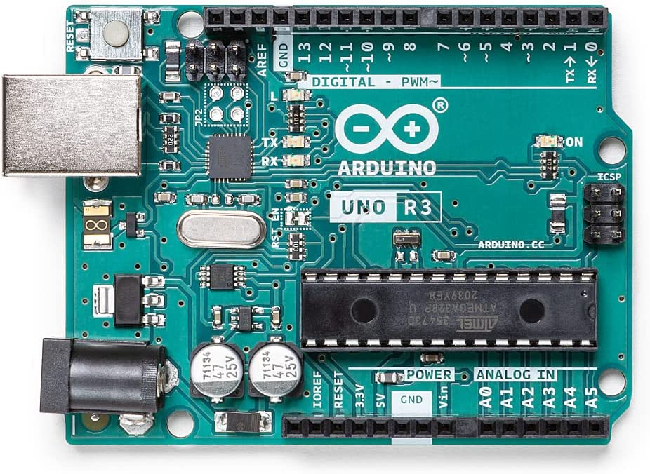
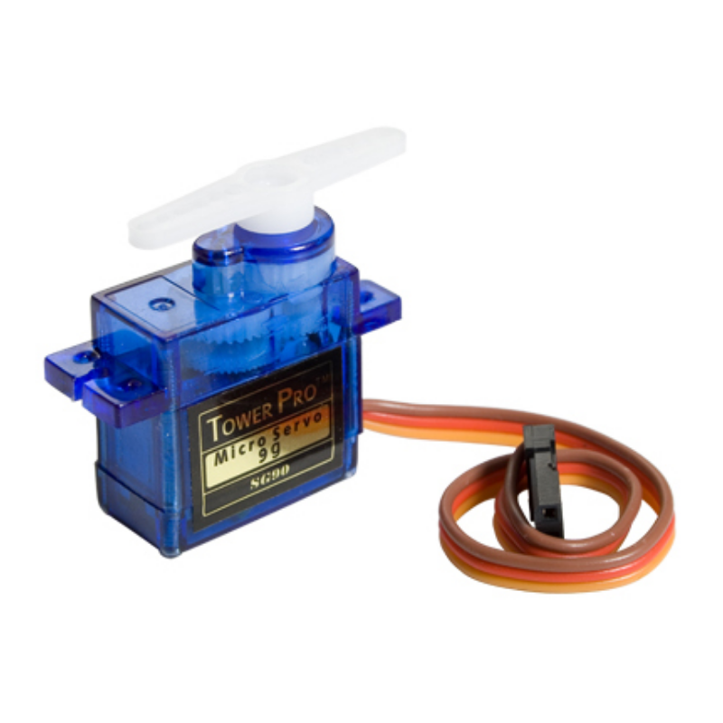
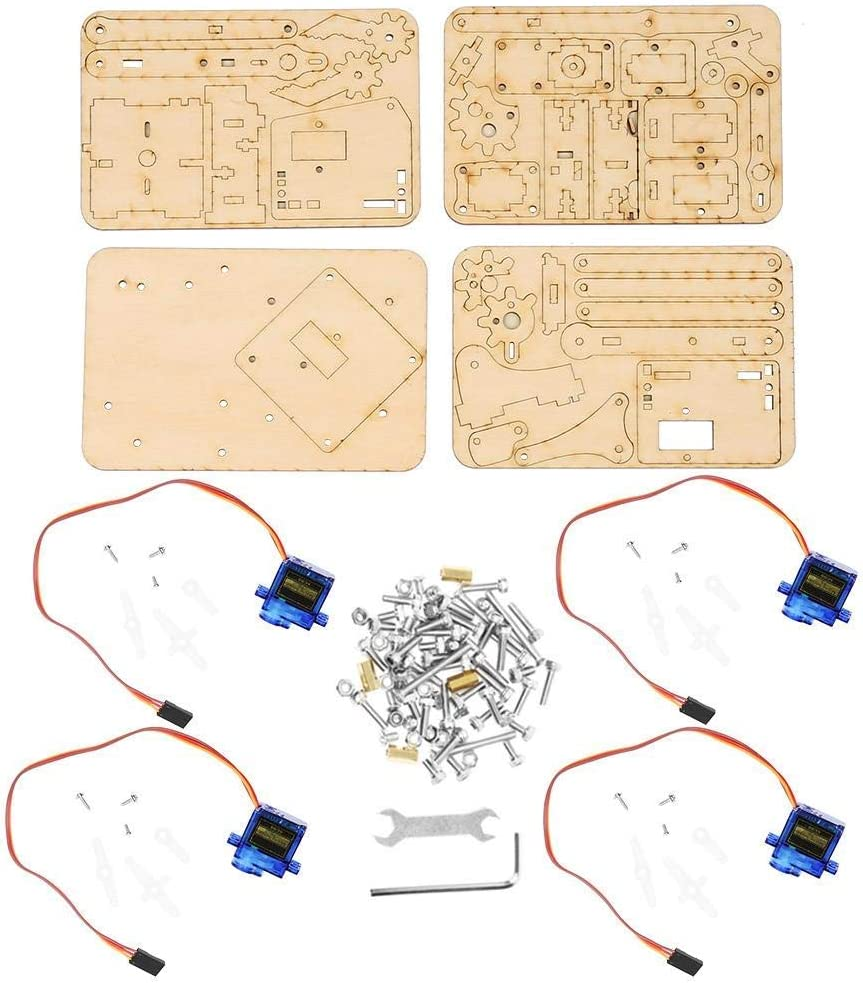
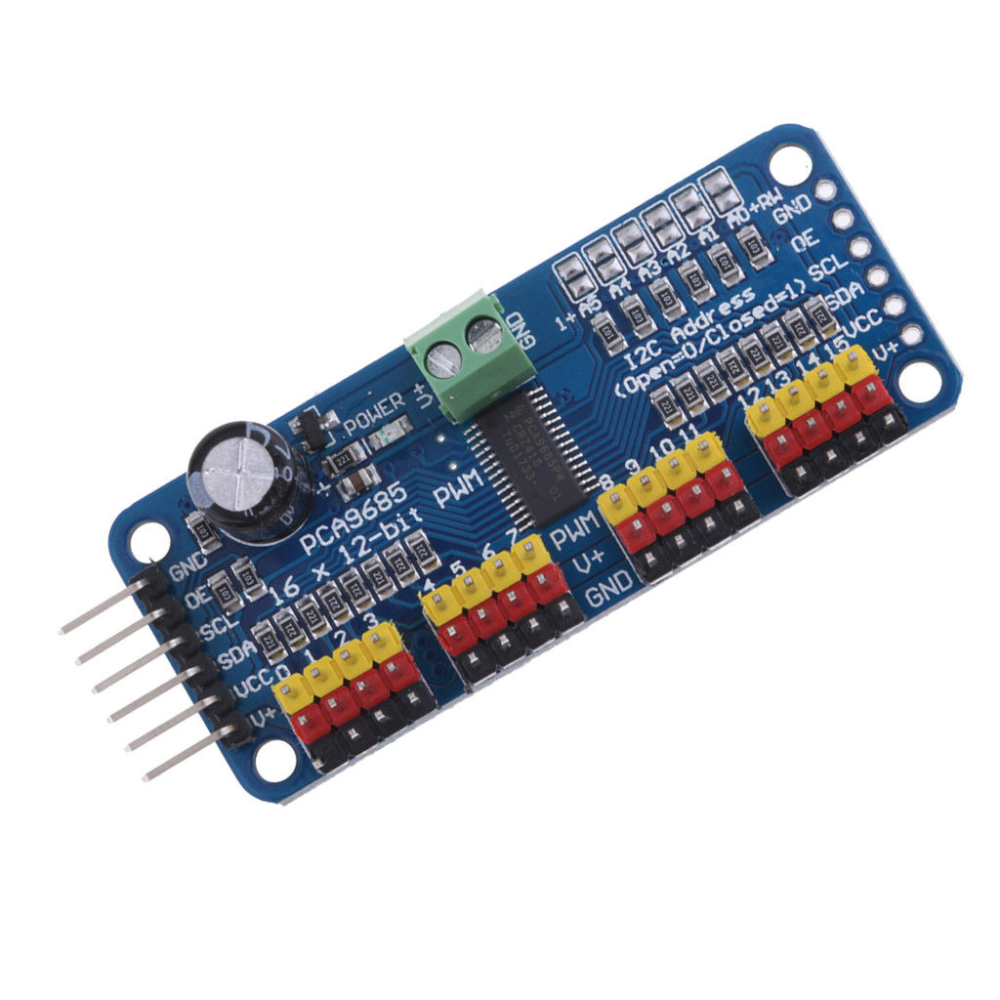
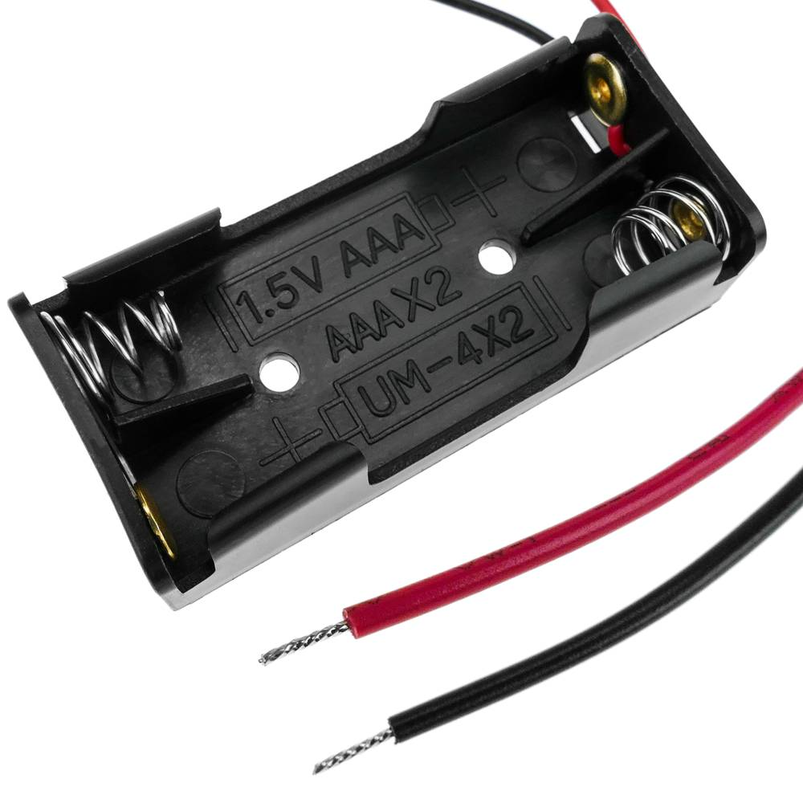

- ARDUINO UNO REV3 (x1) 
- Servomotor SG90(x4) 
- Kit del Brazo del Robot (x1) 
- PCA9685 Módulo I2C de controlador de servomotor PWM de 12 bits y 16 canales (x1) 
- Cable de puente “Macho a Hembra”(x8)

- Portapilas AAA 1,5V (x2) 


Aquest treball està fet per (Eric Martinez Garcia i Aaron Rojas Garcia)